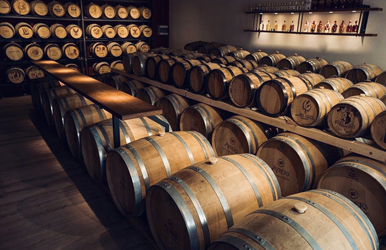

Завод
Завод пива "NAZVAS" Пивоварний завод "NAZVAS" знаходиться в самому серці Німеччини, в мальовничому регіоні Баварії, де традиція пивоваріння налічує століття. Заснований у 1890 році, завод став символом майстерності та якості, яку цінив кожен любитель пива. Назва "NAZVAS" походить від стародавнього слов'янського слова, що означає "натхнення". Це слово відображає філософію компанії: кожен етап виробництва пива є результатом творчості та уважного ставлення до традицій. Технології та процес виробництва "NAZVAS" поєднує класичні методи пивоваріння з новітніми технологіями. Завод використовує лише найкращі сорти хмелю та ячменю, вирощені на місцевих фермах,
де суворо контролюється якість сировини. Місцева вода, що постачається з чистих підземних джерел, є ще однією особливістю, що додає пиву особливий смак і аромат. Процес варіння пива на
заводі є справжнім мистецтвом. Тут створюють не тільки традиційне світле та темне пиво, а й експериментують з новими смаками, додаючи спеції, фрукти та навіть мед, щоб створити унікальні сорти для найвибагливіших гурманів.